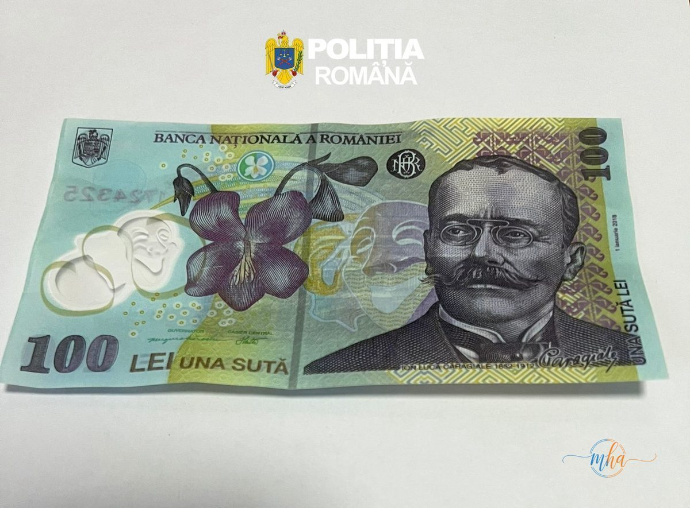

Un caz cutremurător a ieșit la iveală în Drobeta-Turnu Severin: un bărbat de 47 de ani a fost reținut de polițiști după ce anchetatorii au descoperit că acesta ar fi folosit o fetiță de 12 ani pentru a pune în circulație bancnote false de 100 de lei. Copila era trimisă să plătească cu bani falși în diverse magazine și la comercianți, fără a ști — sau fără a putea refuza — ce i se cerea să facă.
📋 Date dosar — Bancnote false, Drobeta-Turnu Severin
| Suspect reținut | Bărbat, 47 ani, din Drobeta-Turnu Severin |
| Victimă instrumentalizată | Minoră, 12 ani |
| Infracțiune | Punerea în circulație a bancnotelor false |
| Valoarea bancnotelor | 100 lei (bancnote false) |
| Acțiune | Percheziție domiciliară, reținere 24 ore |
| Dosar | IPJ Mehedinți — Poliția municipiului Drobeta-Turnu Severin |
Cum funcționa schema: o minoră de 12 ani, scut uman pentru frauda cu bani falși
Potrivit anchetatorilor, bărbatul ar fi apelat la o minoră de 12 ani pentru a plasa bancnotele contrafăcute, știind că un copil trezește mai puțină suspiciune în fața casierilor sau a comercianților. Schema este deosebit de gravă: folosirea unui minor în comiterea unei infracțiuni agravează semnificativ situația juridică a inculpatului.
Polițiștii din cadrul Poliției municipiului Drobeta-Turnu Severin au efectuat o percheziție domiciliară la locuința bărbatului, unde au găsit mai multe bancnote false de 100 de lei. În urma probelor administrate, bărbatul a fost reținut pentru 24 de ore.
Bancnotele false — detalii tehnice din comunicatul IPJ Mehedinți
„Polițiștii din cadrul Poliției municipiului Drobeta-Turnu Severin au reținut pentru 24 de ore un bărbat de 47 de ani, din municipiu, bănuit că a pus în circulație bancnote false de 100 de lei, folosindu-se de o minoră de 12 ani. În urma percheziției domiciliare efectuate la locuința bărbatului, polițiștii au găsit mai multe bancnote false de 100 de lei. Față de acesta s-a întocmit dosar penal sub aspectul săvârșirii infracțiunii de punere în circulație de valori falsificate."
Bancnota falsă de 100 lei — verso | Foto: Poliția Română

Bancnota falsă de 100 lei — față (Ion Luca Caragiale) | Foto: Poliția Română
Ce riscă bărbatul de 47 de ani
Infracțiunea de punere în circulație de valori falsificate este prevăzută și pedepsită de Codul Penal român, pedeapsa putând ajunge la 10 ani de închisoare. Dat fiind că în comiterea faptei a fost folosit un minor, anchetatorii pot reține și circumstanțe agravante, ceea ce ar putea majora pedeapsa.
Bărbatul urmează să fie prezentat Parchetului de pe lângă Judecătoria Drobeta-Turnu Severin, care va decide dacă se va propune arestarea preventivă sau dacă acesta va fi lăsat în libertate sub control judiciar.
Cum recunoști o bancnotă falsă de 100 lei
BNR recomandă verificarea elementelor de siguranță ale bancnotelor: filigranul (vizibil în lumină transparentă), firul de siguranță înglobat în hârtie, cerneala cu efect iridescent pe cifra valorii, precum și microimprimarea vizibilă cu lupa. Orice bancnotă care nu prezintă aceste elemente este suspectă și trebuie predată imediat poliției sau băncii, fără a o mai pune în circulație.
Conform prezumției de nevinovăție, persoana reținută este considerată nevinovată până la pronunțarea unei hotărâri judecătorești definitive.